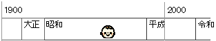

プロフィール
- 生年月日
- 
- 楽しみ
-
- 行ったことのない場所に行って景色を見る、最近は近場が多い
 dummy
dummy - 自転車で温泉に行って汗だくで帰り、シャワーを浴びてビールを飲む
 dummy
dummy- → 銀輪はたまに唄う
- 何かを作ったり描いたり撮ったり
 dummy
dummy
- 行ったことのない場所に行って景色を見る、最近は近場が多い
- 自慢
-
- 計算機の1ビット（磁気コアメモリ）を見たことがある、しかもF77プログラムを作ってその計算機を動かした
- パンチカードの束を計算機センターのカード読み取り機で読み取らせて計算機（HITAC8450）を動かしていた
- パンチカード1枚が1行分（80文字）であり、プログラムはパンチカードの束として厚みと重みを体感できた
- プログラム行を手渡しで貸し借りでき、プログラムを落とす（床にばらまく）と復旧が大変
- J1ビザで渡米し大学助手としてアルバイトしたことがある、しかも確定申告時に連邦政府と州政府の税務窓口で言葉が通じずたらい回しにされた
- 計算機の1ビット（磁気コアメモリ）を見たことがある、しかもF77プログラムを作ってその計算機を動かした
- 資格
-
- 第1種情報処理技術者
- 色彩コーディネーター資格3級
- 中国語検定3級
- フォークリフト運転技能講習
- Webクリエイター能力認定試験（エキスパート）